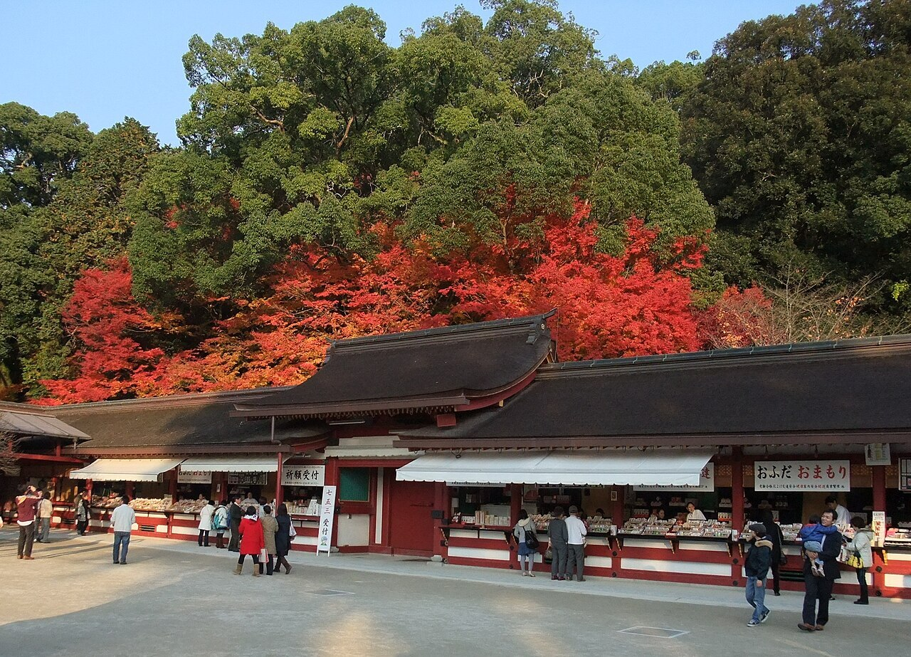

太宰府天滿宮太宰府天満宮
祭祀天神菅原道真的神社，道真葬於此地，考生常來祈求考試合格

基本資料
| 項目 | 內容 | 來源 |
|---|---|---|
| 日文名稱 | 太宰府天満宮 | [3] |
| 讀音 | 待補資料 | |
| 所在地 | 福岡縣太宰府市宰府 4-7-1（僅單一旅遊網站資料） | [2][3] |
| 主祭神 | 菅原道真（天神） | [1][3] |
| 創建年代 | 待補資料（御本殿建於 1591 年，僅單一旅遊網站資料） | [1] |
由來與歷史
菅原道真在 901 年遭左大臣藤原時平陷害，被貶往大宰府。他於 903 年病逝於當地並葬在那裡，即今日太宰府天滿宮所在之處[2]。
道真死後，世人為他洗刷冤屈，尊稱他為「天滿大自在天神」，使他成為天神信仰的主神[1][3]。
御本殿建於 1591 年，列為重要文化財，也是道真長眠之地（僅單一旅遊網站資料）[1]。目前御本殿正在整修，為迎接 2027 年的道真公 1125 年式年大祭（查核日期 2026-11-16）[1][3]。
祭神與信仰
太宰府天滿宮祭祀菅原道真，又稱天神，見 天神（菅原道真）。道真生前擅長漢詩，被尊為學問之神，因此這裡掌管學問、文化與藝術[2][1]。
許多考生會來此祈求考試合格[1][3]。來源 3 的專訪內容則提到，天神的庇佑不只在考試，也守護以「誠」為本、踏實努力的人（僅單一旅遊網站資料）。
神使是牛，見 神使。傳說道真去世時，拉著遺體的公牛在途中躺臥不前，追隨者便把他葬在那裡，也就是現在御本殿的位置[1][3]。
境內看點
- 太鼓橋：前往本殿要經過三座紅色的橋，據說分別象徵過去、現在與未來。中間是平坦的直橋[1][3]。
- 飛梅：傳說道真離京時，對庭院裡的梅花吟詩，梅花思念主人，一夜之間飛到大宰府，就是今日的飛梅，至今仍在境內開花[1][3]。兩份來源描述的位置略有不同，一說在本殿右側，一說在御本殿旁，這裡都保留。
- 臨時正殿（仮殿）：御本殿整修期間，由建築師藤本壮介的事務所設計的仮殿暫代正殿，屋頂種植太宰府的植物與道真喜愛的梅（僅單一旅遊網站資料；查核日期 2026-11-16）[1]。
- 御神籤：籤紙顏色隨季節變換，共 11 種，另有鷽鳥造型的籤。傳說鷽鳥解決了搗亂的蜜蜂，因此被視為神的使者（僅單一旅遊網站資料）[1]。
- 御神牛像：來源 3 寫境內有 11 尊俯臥的牛像，撫摸牛頭據說能得到智慧，所以也被稱為「撫牛」（僅單一旅遊網站資料）[3]。來源 1 只提到門口有一尊牛銅像，兩者並不矛盾，但 11 尊的數字只見於來源 3。
參拜小提醒
- 參拜方式大致依 參拜方式：進入樓門前先在手水舍淨手，參拜時行「二拜二拍手一拜」[3]。
- 御本殿整修中，需在御本殿前臨時設置的特別臨時本殿參拜。來源寫的是 2026 年 1 月時的情況（查核日期 2026-11-16）[3]。
來源
- 株式会社 Fukuoka Insider，〈太宰府天滿宮 | 考試合格祈願 | 必訪地點〉
- 中文維基百科，〈菅原道真〉
- FUN!JAPAN，〈太宰府天滿宮完全指南｜2026年最新資訊、向神職人員請教其保佑與靈驗之處，以及從博多車站前往的交通方式〉